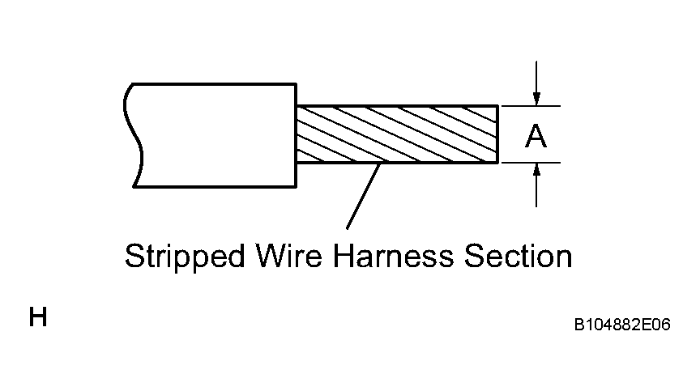

Disposal (2005/07-2005/12)
HINT:
When scrapping a vehicle equipped with an SRS or disposing of the steering pad, be sure to deploy the airbag first in accordance with the procedure described below. If any abnormality occurs with the airbag deployment, contact the SERVICE DEPT. of TOYOTA MOTOR SALES, U.S.A., INC.
- Never dispose of a steering pad with an inactivated airbag.
- The airbag produces a loud, exploding sound when it activates. Perform the operation where it will not be a nuisance to people nearby.
- When activating the airbag, always use the specified SST (SRS airbag deployment tool).
- Perform procedures in a place away from electrical interference.
- When activating the airbag, stand at least 10 m (33 ft.) away from the steering pad.
- The steering pad becomes very hot when the airbag is deployed. Do not touch it for at least 30 minutes after activation.
- Use gloves and safety glasses when handling a steering pad with a deployed airbag.
- Do not apply water to a steering pad with a deployed airbag.
- Always wash your hands with water after completing the operation.

- DISPOSE OF STEERING PAD ASSEMBLY TOGETHER WITH VEHICLE
HINT:
Prepare a battery as the power source to deploy the airbag.
- Check if SST is functioning properly.
SST 09082-00700
- Connect the SST's red clip to the positive (+) battery terminal and the black clip to the negative (-) battery terminal.
HINT:
The yellow connector will be used to connect to another SST in a later step.
- Press the SST activation switch, and check that the LED of the SST activation switch illuminates.CAUTION: If the LED illuminates when the activation switch is not pressed, SST may have a malfunction, in which case that SST should not be used.
- Disconnect SST from the battery.
- Connect the SST's red clip to the positive (+) battery terminal and the black clip to the negative (-) battery terminal.
- Follow the "Precaution" (see AIRBAG SYSTEM ).
- Disconnect the cable from the negative (-) battery terminal.CAUTION: Wait at least 90 seconds after disconnecting the cable from the negative (-) battery terminal to prevent airbag and seat belt pretensioner activation.
- Remove the steering column cover lower.
- Turn the steering wheel to the right and left as necessary to remove the 2 screws.
- Remove the screw and cover lower.
- Install SST.CAUTION: Check that there is no free play in the steering wheel and steering pad.
- Disconnect the yellow airbag connector from the spiral cable.NOTE: When handling the airbag connector, do not damage the airbag wire harness.
- Connect SST (A) to SST (B). Then connect SST (B)'s connector to the spiral cable.
SST 09082-00700, 09082-00780
NOTE: To avoid damaging the SST connector and wire harness, do not lock the secondary lock of the twin lock. - Move SST at least 10 m (33 ft.) away from the front side window.
- Maintain a small opening in the front side window for the SST wire harness. Close the remaining windows of the vehicle. Close all doors.NOTE: Take care not do damage the SST wire harness.
- Connect the SST's red clip to the positive (+) battery terminal and the black clip to the negative (-) battery terminal.
- Disconnect the yellow airbag connector from the spiral cable.
- Deploy the airbag.
- Check that no one is inside the vehicle or within a 10 m (33 ft.) radius of the vehicle.
- Press the SST activation switch and deploy the airbag.CAUTION:
- When deploying the airbag, make sure that no one is near the vehicle.
- The steering pad becomes extremely hot when the airbag is deployed. Do not touch it for at least 30 minutes after deployment.
- Use gloves and safety glasses when handling a steering pad with a deployed airbag.
- Do not apply water to a steering pad with a deployed airbag.
- Always wash your hands with water after completing the operation.
HINT:
The airbag is deployed as the SST activation switch LED illuminates.
- Check if SST is functioning properly.
- DISPOSE OF ONLY STEERING PAD ASSEMBLY NOTE:
- When disposing of the steering pad, never use the customer's vehicle to deploy the airbag.
- Be sure to follow the procedure detailed below when deploying the airbag.
HINT:
Prepare a battery as the power source to deploy the airbag.
- Check if SST is functioning properly (see previous step).
- Remove the steering pad (see REMOVAL
).CAUTION:
- When removing the steering pad, work must be started at least 90 seconds after the ignition switch is turned OFF and after the cable is disconnected from the negative (-) battery terminal.
- When storing the steering pad, keep the airbag deployment side facing upward.
- Using service wire harnesses for the vehicle, tie down the steering pad to a disc wheel (with tire).
Wire harness:
Stripped wire harness section A
1.25 mm 2 or more (0.0019 in. 2 or more)
NOTE: Use a disc wheel (with tire) that you are planning to throw away, as the airbag deployment will damage the disc wheel.CAUTION: Do not use wire harnesses that are too thin or any other substitute items to tie down the steering pad. They may snap when the airbag deploys. Always use vehicle wire harnesses that have an area of at least 1.25 mm2 or more (0.0019 in.2 ).
Courtesy of © TOYOTA, LICENSE AGREEMENT TMS1002HINT:
To calculate the area of the stripped wire harness section:
Area = 3.14 x Diameter2 /4
- Install the 2 bolts with washers into the 2 bolt holes of the steering pad.
Bolt:
L:
35.0 mm (1.378 in.)
M:
6.0 mm (0.236 in.)
Pitch:
1.0 mm (0.039 in.)
- After connecting SST to each other, connect them to the steering pad.
SST 09082-00802 (09082-10801, 09082-30801)
- Wind 3 wire harnesses at least twice around the bolts installed on the left and right sides of the steering pad.CAUTION:
- Tightly wind the wire harnesses around the bolts so that there is no slack.
- Make sure that the wire harnesses are tight. If there is slack in a wire harness, the steering pad may come loose when the airbag is deployed.
- Face the airbag deployment side of the steering pad upward. Separately tie the left and right sides of the steering pad to a disc wheel through the hub nut holes. Position the SST connector so that it hangs downward through the hub hole in the disc wheel.CAUTION:
- Make sure that the wire harnesses are tight. If there is slack in a wire harness, the steering pad may come loose when the airbag is deployed.
- Always tie down the steering pad with the airbag deployment side facing upward.
- Install the 2 bolts with washers into the 2 bolt holes of the steering pad.
- Install SST.CAUTION: Place the tire with disc wheel and steering pad on a level surface.
- Connect the connector of SST.
SST 09082-00700
NOTE: To avoid damaging the SST connector and wire harness, do not lock the secondary lock of the twin lock. Also, secure some slack for the SST wire harness inside the disc wheel. - Move SST at least 10 m (33 ft.) away from the steering pad.
- Connect the connector of SST.
- Cover the steering pad with a cardboard box or tires.
- Covering method using a cardboard box:
Cover the steering pad with the cardboard box and place weights of at least 19 kg (43 lb) on the cardboard box in 4 places.
Cardboard box size:
X minimum = 460 mm (18.11 in.)
Y minimum = 650 mm (25.59 in.)
NOTE:- When dimension Y of the cardboard box exceeds the tire dimension, X should be the following size.
X minimum = 460 mm (18.11 in.) + width of tire
- If using a cardboard box that is smaller than the specified size, the cardboard box will break during airbag deployment.
- When dimension Y of the cardboard box exceeds the tire dimension, X should be the following size.
- Covering method using tires:
Place at least 3 tires (without disc wheels) on top of the tire (with disc wheel and steering pad).
Tire size:
Width minimum:
185 mm (7.28 in.)
Inner diameter minimum:
360 mm (14.17 in.)
CAUTION: Do not use tires with disc wheels to cover the tire (with disc wheel and steering pad). - Tie the tires together with 2 wire harnesses.CAUTION: Make sure that the wire harnesses are tight. If there is slack in a wire harness, the tires may come loose when the airbag is deployed.
- Covering method using a cardboard box:
- Deploy the airbag.
- Connect the SST's red clip to the positive (+) battery terminal and the black clip to the negative (-) battery terminal.
- Check that no one is within a 10 m (33 ft.) radius of the steering pad.
- Press the SST activation switch and deploy the airbag.CAUTION: When deploying the airbag, make sure that no one is near the tires.
HINT:
The airbag is deployed as the SST activation switch LED illuminates.
- Dispose of the steering pad.CAUTION:
- The steering pad becomes extremely hot when the airbag is deployed. Do not touch it for at least 30 minutes after deployment.
- Do not apply water to a steering pad with a deployed airbag.
- Always wash your hands with water after completing the operation.
- Remove the steering pad from the disc wheel.
- Place the steering pad in a plastic bag, tie it tightly and dispose of it in the same way as other general parts.